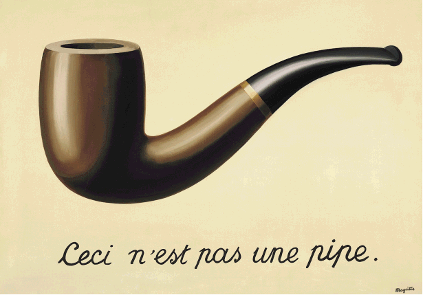

In India, maar ook wel daarbuiten, gebruiken veel
mensen zowel bij ontmoetingen als bij het afscheid nemen het
Namasté gebaar. Het blijkt een gebaar te zijn dat goed past
bij de strekking van dit boek: Wij zijn ons Hart. Desgevraagd legt
Aadil Palkhivala, een Yogaleraar, Advocaat en Spreker, de betekenis
achter Namasté uit:
"Het gebaar Namasté vertegenwoordigt de
overtuiging dat er een goddelijke vonk in ieder van ons zit, dat is
gelegen in het hart (chakra). Het gebaar is een erkenning van
de ene ziel door de ziel in de ander. Het woordje betekent
letterlijk "buig ik jij" of "Ik buig voor jou". Voor het uitvoeren
van Namasté worden de handen samen op het hart geplaatst, de
ogen worden gesloten en het hoofd wordt gebogen. Dit is een uiting
van een bijzonder diepe vorm van respect. In het westen wordt
tijdens het buigen het woord Namasté uitgesproken, in India is
het gebaar op zich voldoende duidelijk."
Voorbij de formuleringen op niveau 4 van dit
model, en zeker voorbij niveau 4, is het onmogelijk nader te
specificeren. Met elke poging daartoe 'moeten' we immers 'afzakken'
naar onze mogelijkheden om te benoemen, communiceren,
rationaliseren en dat
kan alleen op bovenbrein niveau (3). Einstein formuleerde het als volgt:
"Ik zie een patroon, maar
mijn fantasie kan zich geen beeld vormen van de maker van dat
patroon. Ik zie een klok, maar ik kan me de klokkenmaker niet
voorstellen. De mens is niet in staat de vier dimensies te
begrijpen, laat staan zich een God voor te stellen voor wie duizend
jaren en duizend dimensies als een enkele
zijn?" (The Expanded
Quotable Einstein, Princeton University Press, 2000 p.
208)
Ik heb ervoor gekozen om alles wat voorbij niveau
4 ligt aan te duiden met God en geen nadere specificatie van dat God te
geven. Het woordje God geeft in dit boek alles aan wat niet uitgelegd
kán worden en wat voorbij het niveau van het Hart ligt. Elke
nadere duiding van God is de projectie van de lezer; het automatisch
laten lopen van een gedragsprogramma in het
brein.
Wel is mijn boodschap dat het Hart de interface
tussen de natuurlijke, biologische mens en God is, en ik benoem
enkele fenomenen waar dat 'Goddelijke' zich in dat natuurlijke,
biologische menswezen mee uitdrukt; herkenbaar is. Verder kunnen we
van onze eigen geschiedenis leren dat elke uitweiding, invulling,
duiding, verklaring, uitleg, verbijzondering
van God voor heel veel mensen onlosmakelijk tot
rationalisering van God leidt, en daarmee afdoet
aan God.
Einstein legde het mooi 'rationeel' uit en de
Belgische schilder Magritte gaf het fenomeen waar Einstein en ik op
doelen weer met dit schilderij.

Voor de grote groep Hoofdmensen die gepassioneerd
geloven in het ongeloof, en daarom 'gedwongen' en/of geprogrammeerd
zijn een (negatieve) betekenis aan het
woord God te geven die ik per definitie juist niet bedoel,
geef ik het advies het woord God te vervangen door Metafysisch. Ik (be)doel met beide
woorden, God en Metafysisch, op hetzelfde.
Wikipedia daarover: “Metafysica is de wijsgerige leer die
niet de werkelijkheid onderzoekt zoals ze ons gegeven wordt uit
zintuiglijke waarneming (fysica), maar op zoek gaat naar het wezen
van die werkelijkheid en wat haar constitueert. Als zodanig
beschouwd is metafysica ook de grondslag van de wetenschappen omdat
die uitgaan van een zekere aanname over de aard van de
werkelijkheid. Oorspronkelijk betekende de term Wat na de natuur
(fysica) komt, gebaseerd op werken van Aristoteles die volgden op
zijn 'Fysica'.
De term metafysica is oorspronkelijk afkomstig
van Andronicus van Rhodos, de eerste uitgever van de persoonlijke
geschriften van Aristoteles die de verhandelingen die in zijn
uitgave volgden op diens Fysica Ta meta ta fysica noemde, waarmee
hij slechts aangaf dat de boekrollen "op de boekenplank" volgden
"na de Fysica". Deze werken gaven hun naam aan de erin behandelde
vraagstukken, die later dus als typisch "metafysisch" werden
gezien. Aristoteles zelf gebruikte de term metafysica niet, maar
spreekt over 'eerste filosofie'. De 'eerste filosofie' gaat vooraf
aan alle andere wetenschappen en poogt een inzicht te verkrijgen in
de eerste oorzaken van al wat is.”
N.B. Religies zijn een conceptuele weergave van
een perceptuele wereld: de wereld waarmee ons Hart de verbinding
maakt vanuit lichaam naar geest, of feitelijk bij Hartmensen juist
andersom. Hartmensen hebben er vooral geen moeite mee om hun hart
te volgen ook al lijken er rationeel of emotioneel dingen niet te
kloppen. Het verlangen van elke mens naar de zaken van waaruit, en
waarmee, ons Hart contact heeft wordt door Hoofdmensen doorgaans
als 'het verlangen naar God' genoemd, en daar is op zich niets mis
mee. Waar het doorgaans fout gaat is dat elke conceptualisering
van God door Hoofdmensen als letterlijke beschrijving,
als rationele en complete waarheid wordt beschouwd. Dit is de
verklaring waarom de hartgevoelde waarheid dat God Liefde is door
Hoofdmensen probleemloos uitgewerkt kan worden in haatvolle
veroordeling en zelfs doodslag wanneer een ander hun rationele
projectie niet volledig overneemt. Hoofdmensen zijn zo bedreven in
het compartimenteren (in hokjes verdelen) dat ze de
tegenstrijdigheid tussen hun eigen religie en hun eigen gedrag niet
meer (kunnen/willen) zien. Laat ik het zo formuleren: wie zich aan
Jezus wil verbinden doet er goed aan Jezus in zijn/haar hart te
laten in plaats van in zijn/haar hoofd.